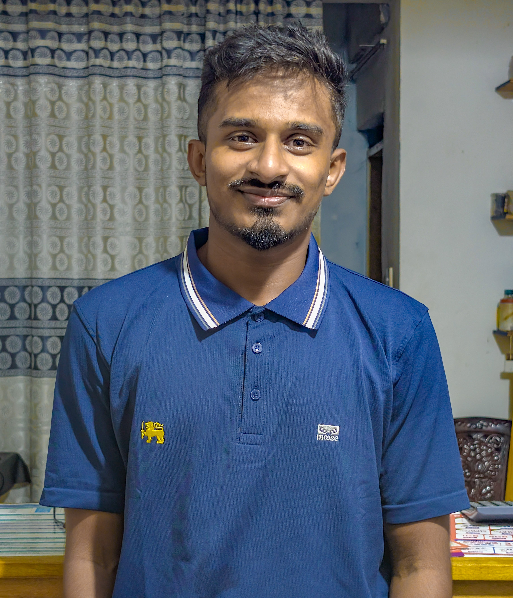

E.M. Shanuka Dilshan Edirisinghe
Undergraduate Network Engineer | CCNA Candidate
About Me
I am an undergraduate BICT (Hons) student at the University of Jaffna, specializing in Computer Systems & Network Engineering. I am passionate about building robust network infrastructures and exploring cloud technologies.
University of Jaffna
Actively studying CCNA
Skills
Networking
Routing, Switching, Subnetting
Linux
System Configuration & Shell
Cloud
AWS/Azure Fundamentals
Security
Network Security Principles
Automation
Python, Ansible, Netmiko
Virtualization
VMware, ESXi, VirtualBox
Monitoring
Wireshark, SNMP, Nagios
Experience
Academic & Practical Training
- CCNA Routing & Switching lab simulations.
- Network configuration using Cisco Packet Tracer.
- Linux server administration and maintenance labs.
- Virtualization and cloud service deployments.
Projects
Routing and Switching Practice Project
Hands-on configuration of a multi-network topology using Cisco devices with static routing implementation.
- Designed and configured a network topology using 3 Cisco routers and 3 switches in Cisco Packet Tracer.
- Configured IP addressing, LANs, routers, and switches for communication between multiple networks.
- Implemented static routing to enable communication between different networks.
- Verified end-to-end connectivity and performed basic network troubleshooting.
- Demonstrated practical knowledge of routing, switching, TCP/IP, and network configuration.
Cisco Packet Tracer
Static Routing
Routing
Switching
TCP/IP
Multi-Branch Enterprise Network
Enterprise-scale multi-branch network with OSPF, VLANs, DHCP, NAT/PAT, and extended ACLs for secure inter-branch communication.
- Designed and configured a 3-site enterprise multi-branch network using Cisco Packet Tracer.
- Implemented OSPF dynamic routing for communication between branch networks.
- Configured Inter-VLAN routing to enable communication between different VLANs.
- Configured local DHCP pools for automatic IP address assignment.
- Implemented NAT/PAT to provide internet access for internal networks.
- Applied Extended ACLs to improve network security and control traffic.
Cisco Packet Tracer
OSPF
VLAN
Inter-VLAN Routing
DHCP
NAT/PAT
Extended ACL